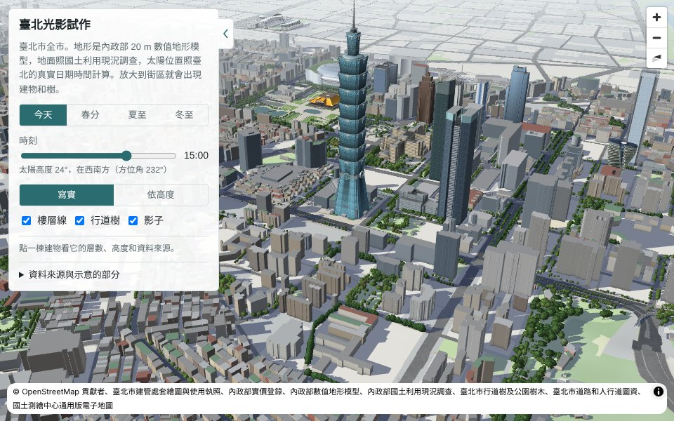
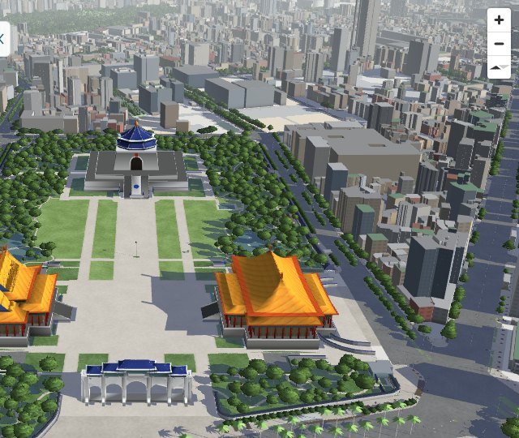
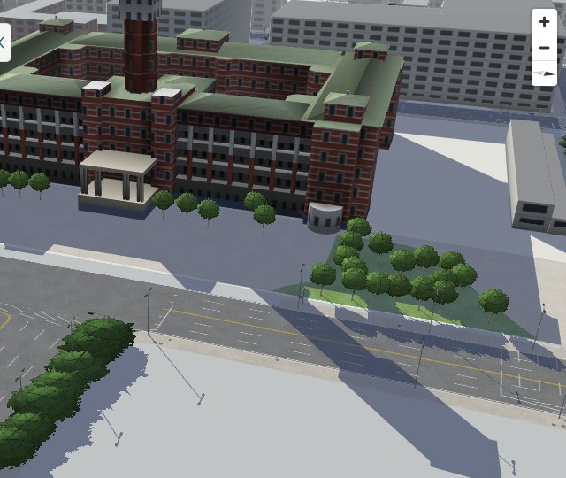
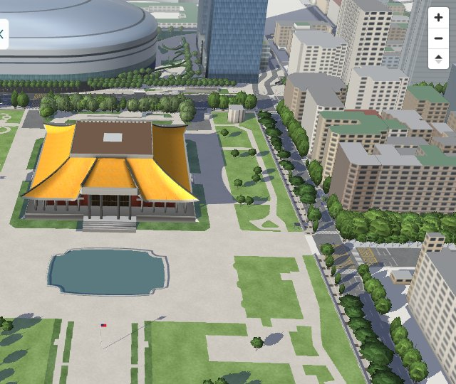
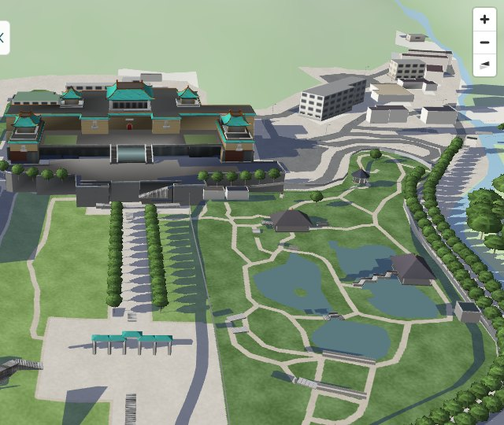
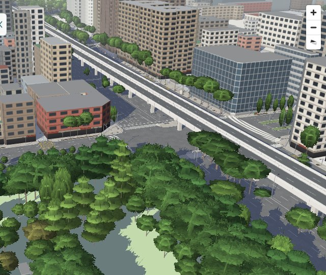
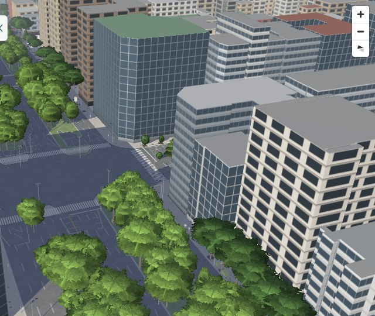

3D 臺北成果
用開放資料做的臺北市 3D 模型。全市的建物、地形、道路和樹都在裡面，另外做了 28 個地標和 12 個園區的細部模型，用瀏覽器就能打開。
開啟 3D 臺北
| 建物 | 86,779 個量體。輪廓來自臺北市建管處的建照套繪圖（2001 年以後的建物）和 OpenStreetMap，高度的來源見下一節。捷運站體、地下街這類在地下的 13 筆不畫。 |
| 地形 | 內政部 20 m 數值地形模型，臺北市 64 幅、新北市 383 幅。 |
| 地面 | 國土測繪中心 2022 年國土利用現況調查的道路、公園、林地、水面。 |
| 道路 | 全市寬 8 m 以上的道路畫出車道、人行道、分隔島、行人穿越道和停止線。分隔島從通用版電子地圖抓出 7,480 塊，車道數用 OpenStreetMap 上 11,038 條道路的標籤。 |
| 高架道路 | 橋面、邊線、車道線、護欄和橋墩。約六成的高架路段在 OpenStreetMap 上有車道數；護欄和橋墩的尺寸是照臺北常見的高架道路估的。 |
| 樹 | 175,363 棵，來自臺北市行道樹和公園樹木資料。中正紀念堂園區沒有一棵棵的樹木資料，樹的位置和樹冠大小從國土測繪中心 2024 年正射影像判讀。 |
| 街道設施 | 路燈、號誌、標誌、站牌、候車亭等全市約十萬個，來自臺北市資料大平臺。 |
| 地標 | 台北101、國父紀念館、中正紀念堂、自由廣場牌樓、國家戲劇院、國家音樂廳、總統府、行政院、立法院紅樓、臺北車站、台北市政府、新光摩天大樓、國立故宮博物院、臺北大巨蛋、臺北小巨蛋、臺北田徑場、臺大總圖書館、天母棒球場、臺北市立美術館、艋舺龍山寺，以及信義計畫區和市府一帶的八棟高樓，共 28 個。依官方資料、建築圖面和照片建模，取代建物資料裡對應的方塊。 |
| 園區 | 國父紀念館、中正紀念堂、臺北車站、台北101、臺北大巨蛋、台北市政府、市民廣場、故宮、小巨蛋、行政院、立法院、龍山寺，共 12 個。鋪面、草地、水池、台階、園區裡的樹和路燈都照 OpenStreetMap 和正射影像畫。 |
| 光影 | 依時間算太陽方向，建物、樹和高架道路都有影子；部分地標貼了從照片取樣的材質。 |
每棟建物的高度照下面的優先順序取：有實價登錄總樓層數的用實價登錄，其次是 OpenStreetMap 標的層數，都沒有的才用 AI 推估。建照套繪圖的建物用使用執照上的高度。
| 高度來源 | 棟數 | |
|---|---|---|
| 實價登錄的總樓層數 | 28,051 | |
| AI 推估 | 27,239 | |
| OpenStreetMap 標的層數 | 20,405 | |
| 使用執照的高度 | 7,861 | |
| OpenStreetMap 標的高度、遮雨棚 | 2,775 | |
| 其他推算 | 461 | |
| 合計 | 86,792 |
使用執照的高度包含 104 棟挑高還沒核對的。其他推算是依建物類型給 1 層、用全市中位數、逐層高度加總等。合計比上面的 86,779 多 13 筆，是在地下、網頁不畫的那些。
沒有任何層數資料的 27,239 棟，用梯度提升樹推估地上層數。用到的資訊有輪廓本身的形狀、周邊 50 到 200 m 內建物的密度、都市計畫的分區和基準容積率、門前道路寬，以及 OpenStreetMap 的建物類型。訓練資料是有實價登錄層數或 OpenStreetMap 層數標籤的建物。
驗證用空間交叉驗證：建物依所在的 1 公里方格分成 5 組，每次拿一組當測試，測試的建物跟訓練的建物不在同一個方格裡。答案是 29,350 棟建物的實價登錄總樓層數。
| 實際層數 | 棟數 | 平均差 | 差一層以內 | 差兩層以內 |
|---|---|---|---|---|
| 全部 | 29,350 | 1.41 層 | 68.7% | 84.7% |
| 5 層以下 | 19,995 | 0.90 層 | 82.9% | 93.5% |
| 6–10 層 | 6,310 | 1.78 層 | 44.4% | 78.0% |
| 11–20 層 | 2,957 | 3.65 層 | 27.1% | 42.3% |
| 21 層以上 | 88 | 13.3 層 | 0% | 0% |
每棟也給一個 80% 區間（10% 和 90% 分位數迴歸），實際涵蓋了 93.3% 的真實層數，區間寬度的中位數是 5 層。
一開始試過用建照套繪圖的建物（2001 年以後、有使照層數）訓練，拿去推 OpenStreetMap 上有層數標籤的老建物，平均高估 3.1 層，新建物普遍比老建物高。所以改成用老建物本身的標籤訓練。標籤本身也有誤差：同時有 OpenStreetMap 層數和實價登錄層數的 9,376 棟，兩者完全一樣的是 69.4%。
以下是 v46 的截圖。





